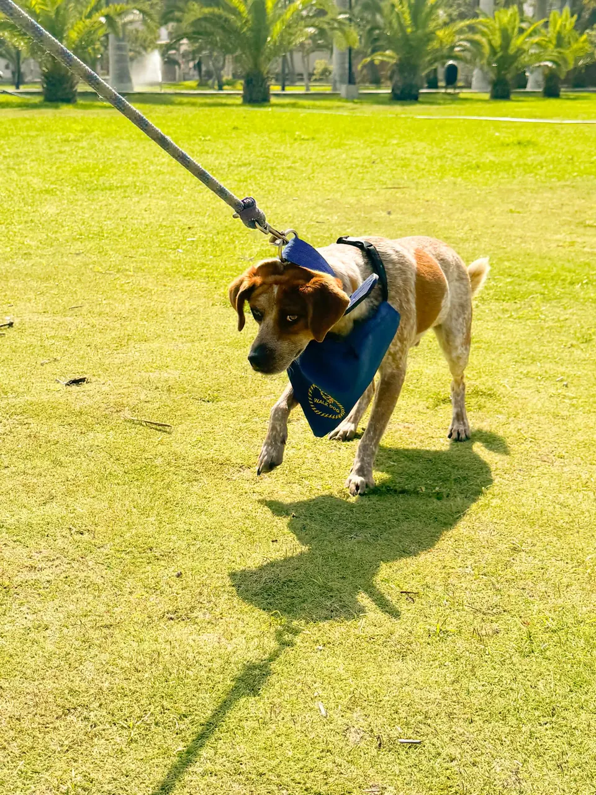
Paseos estresantes
Tu perro jala, se desespera y terminas agotado en cada salida.
Si tu perro jala la correa, reacciona con otros perros o destruye en casa, este programa te guia por un sistema claro en 8 fases.
*El video inicia en silencio. Pulsa «Activar sonido» para escucharlo.
¡Suscribirme ya!Entendemos el estado actual de tu perro y definimos por donde empezar.
Construyes vinculo y comunicacion real con tu perro, sin fuerza ni castigos.
Correa, limites y base de comportamiento para paseos y vida en casa.
Sentado, quieto, ven y caminar juntos con respuestas claras y repetibles.
Reducimos impulsividad y reacciones ante estimulos que antes lo desbordaban.
Salidas seguras y conducta estable con otros perros y en entornos nuevos.
Convertimos los avances en habitos para que el cambio se mantenga en el tiempo.
Perro tranquilo, sociable y obediente: el resultado del proceso completo.
Disfrutas paseos sin tensión y con control. Tu perro responde mejor, tú te sientes más seguro y dejas atrás la ansiedad de cada salida a la calle.
Mejor respuesta ante estímulos, visitas y situaciones del día a día. Un perro más calmado en casa, en el parque y cuando llega gente a tu puerta.
Entiendes lo que le pasa, comunicas con claridad y lo guías con estructura. Dejas de pelear con él y construyes una confianza real, paso a paso.
Contarán con CLASES EN VIVO en CADA ETAPA, junto con el apoyo de nuestra comunidad exclusiva, donde resolveremos todas las dudas.
Tendrás ACCESO POR LA MEMBRESÍA a todo el contenido del curso, y podrás revisar las lecciones todas las veces necesarias, sin importar cuánto tiempo pase.
Podrás avanzar a TU PROPIO RITMO, sin importar horario y desde cualquier dispositivo.
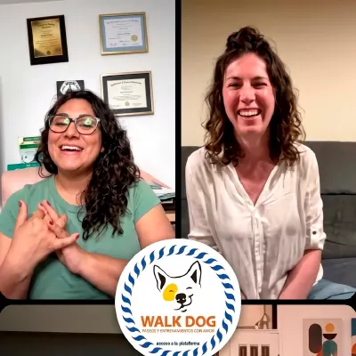
Obtendrás acceso directo a NUESTRA COMUNIDAD PRIVADA, donde podrás compartir tus avances, recibir consejos e interactuar con la comunidad y, sobre todo, con el apoyo del instructor.
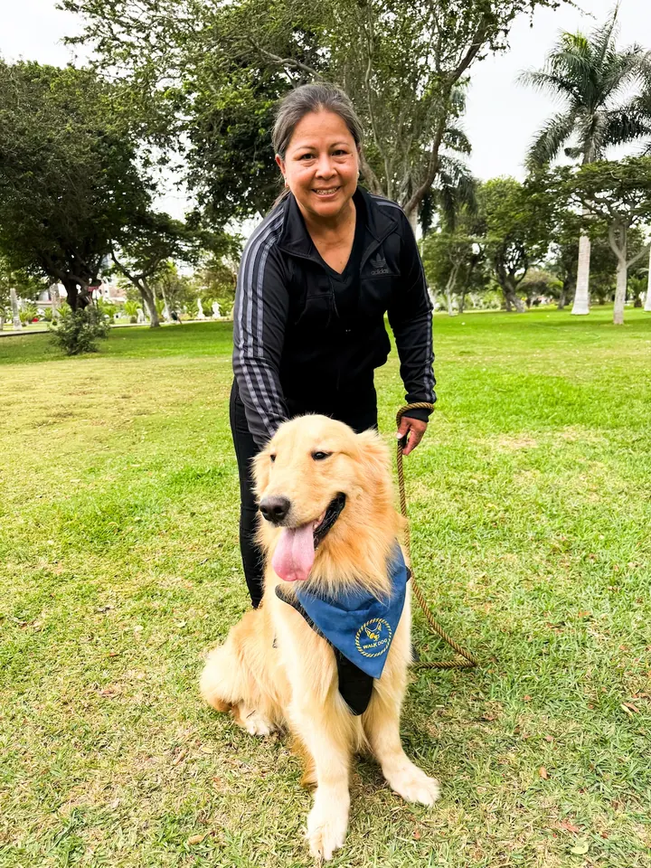
Aprendí que la mejor forma de ayudar a tu perro es la motivación y ayudarlo a entender que de vuelta en U en lugar de jalar de la correa.
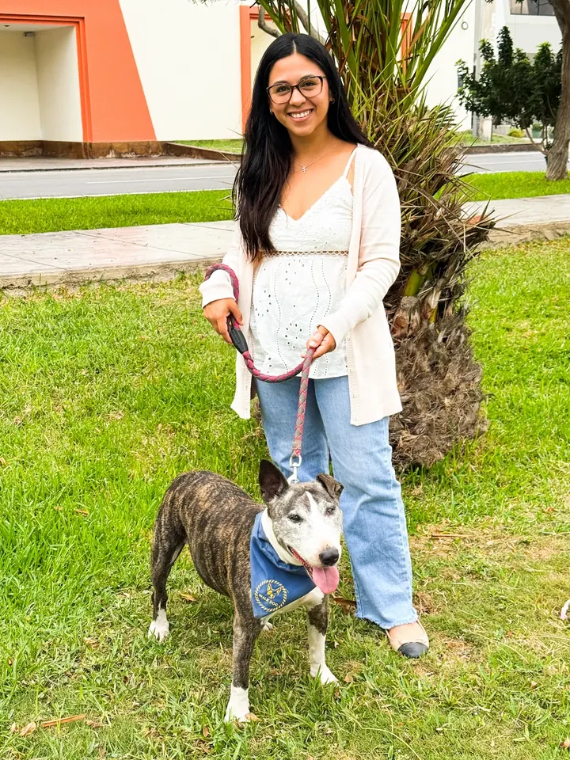
Curso muy util y directo. En pocos dias he notado que mi perro tira mucho menos de la correa y ahora los paseos son mucho mas tranquilos. Por fin disfruto salir a pasear con el.
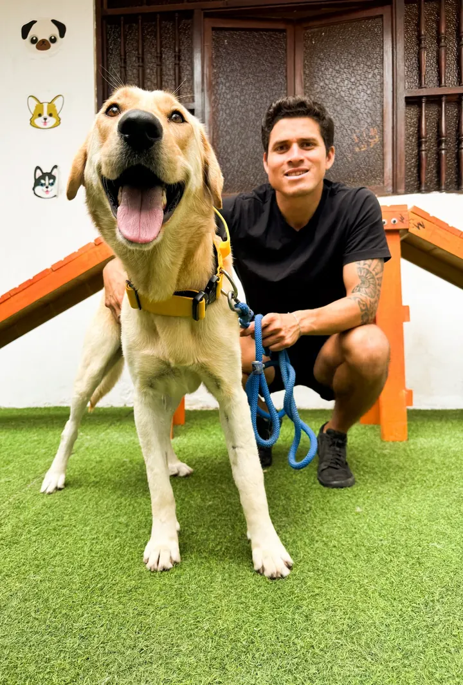
Poco que anadir, muy completo y muy claro. Lo recomiendo totalmente.
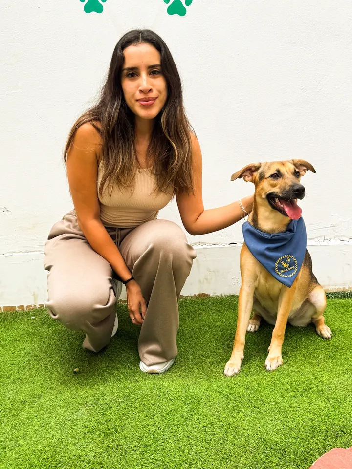
Las explicaciones son claras y el metodo funciona. En pocas semanas mi perro respondio mejor en casa y en la calle.
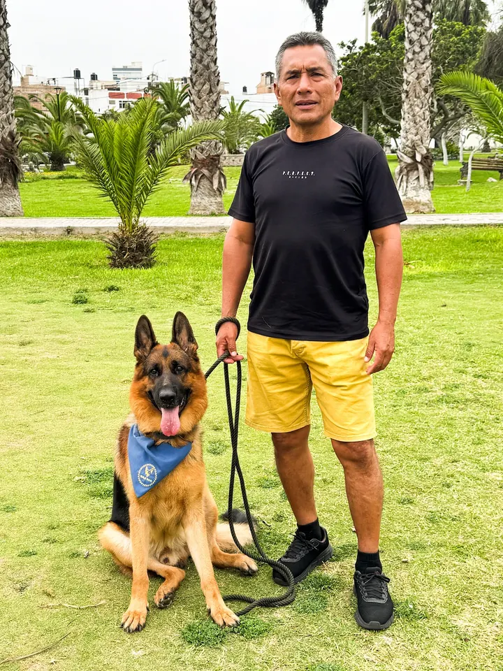
Mi perro dejó de descontrolarse en la puerta. Los ejercicios son claros y se nota el cambio en casa.
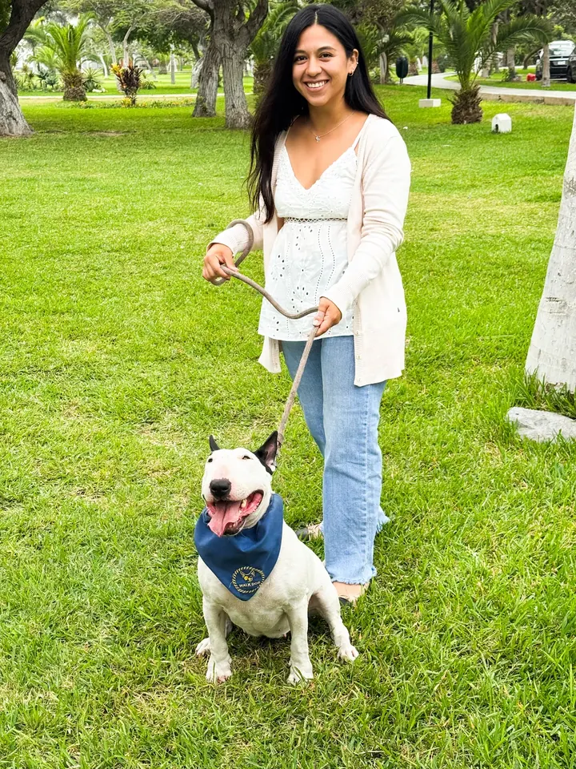
Explicaciones al grano. Por fin entiendo por qué mi perro reaccionaba así con otros y cómo calmarnos los dos en el paseo.
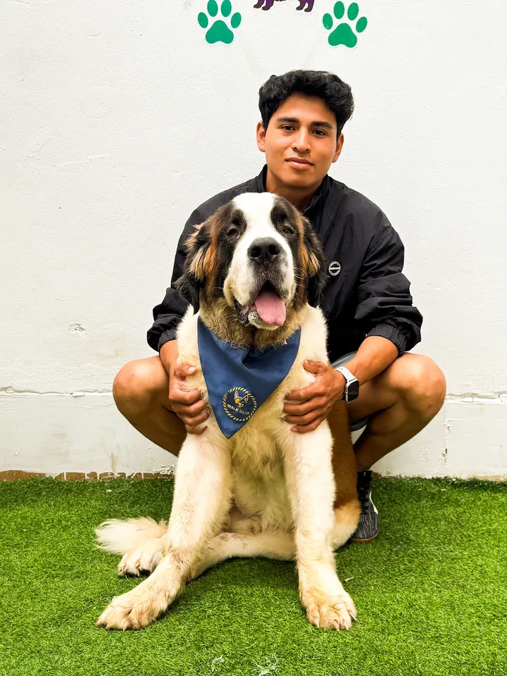
Lo recomiendo a cualquier dueño frustrado. En dos semanas el paseo ya no era una batalla diaria.
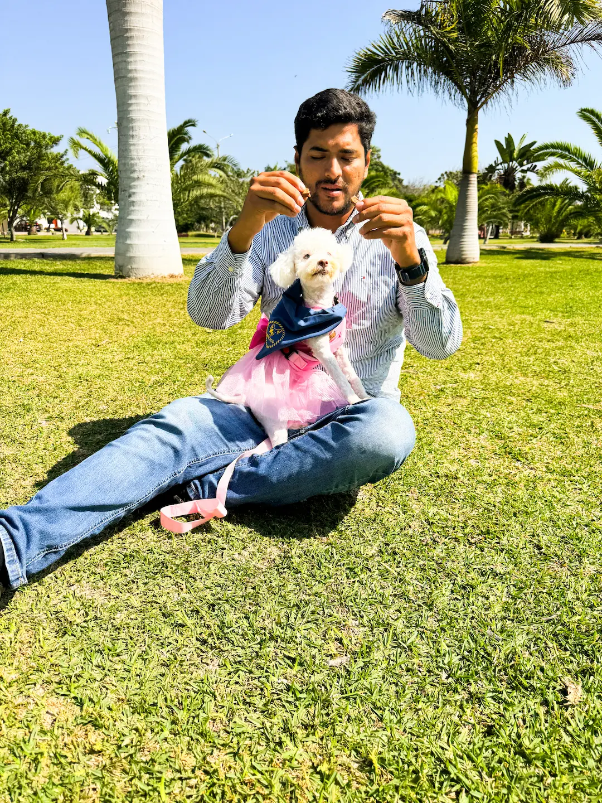
Mi perrita era muy nerviosa en casa. Con el metodo aprendi a guiarla con calma y hoy los paseos son mucho mas tranquilos para los dos.
Toca una foto para leer el testimonio
Sin gritos ni castigos. Resultados reales en casa y en la calle.
Inicio y control en casa
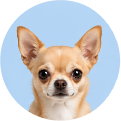
$50
/ Mensuales
Transformación real
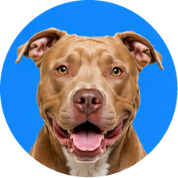
$100
/ Mensuales
Con Baruch / Víctor
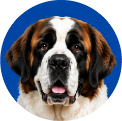
$1000
/ Anuales
Lo esencial antes de empezar con WalkDog.
No. El metodo esta pensado para dueños reales, paso a paso, sin tecnicismos ni experiencia previa.
Si. El sistema se adapta a la edad y al historial de tu perro. Lo importante es seguir las fases con constancia.
Si, sin permanencia. Puedes cancelar cuando lo necesites desde tu cuenta.
Grupo privado para resolver dudas, compartir avances y recibir apoyo del equipo y otros miembros.
Si. Las sesiones en vivo se graban para que puedas verlas cuando te convenga, segun tu plan.
Con 15 a 30 minutos diarios de practica guiada ya puedes notar avances. El curso avanza a tu ritmo.
No necesitas experiencia previa. Solo seguir el sistema paso a paso.
¡Suscribirme ya! Ir a la plataforma